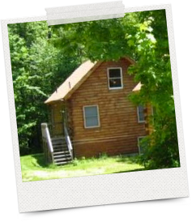
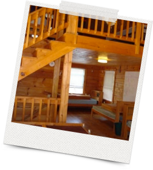

Accommodations
We've reserved several large, heated cabins as well as private bedrooms at Clara Barton Camp. For the full wedding weekend experience we recommend staying with us at the camp. For questions about staying at the camp please ask Melissa
Note: Everyone staying at Clara Barton Camp must bring their own linens and towels!
The Cabins
The cabins are heated and are filled with twin beds (no bunk beds) and are outfitted with bathrooms and showers. Bring linens and towels! Each cabin will sleep about 15 people, and we guarantee a great time catching up with old friends and bonding with new ones!
Private Rooms
There are a few private rooms in the basements of the cabins which may be a good option for couples with young children who still want to take part in the "cabin culture".
In the Barton Center there are 14 private bedrooms, available for those who would like a bit more privacy. These rooms have a set of bunk beds and two twins on the floor (four total beds). There is a shared bathroom with showers. You'll need to bring your own linens and towels for these, too!
Hotel
If you would prefer to stay at a full service hotel then we recommend the Hampton Inn in Auburn.